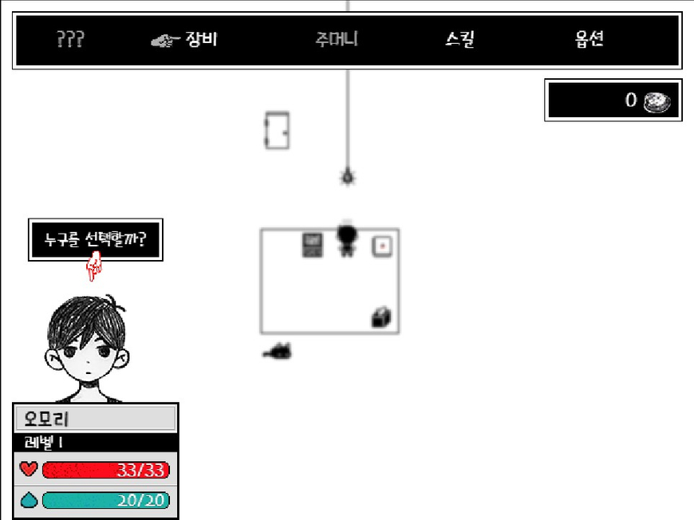

오모리 게임 30분 해봤습니다.
스팀에는 지원 안된다고 써있는데 게임 실행하면 한글화 아주 잘 되어 있습니다.

주인공 캐릭터와 스테이터스 창이구요
처음에 같이 움직이는 동료들입니다!!
캐릭터들마다 레벨, 스킬이 있고 장비도 착용가능하며 상점(우체통)에서 회복약(사탕)등을 구매 가능합니다.
포켓몬 골드처럼 캐릭터들을 움직이고 적들과 만나면 싸우는 형식입니다.
이런 식으로 배틀을 하는데 신기한게 상성이 있습니다.
바로 이런 식으로 슬픔>행복>분노>슬픔... 마치 물불풀처럼 물고 물리는 상성이 존재합니다.
우울함을 주제로 다룬 게임이지만 극초반이라 그런지 아직은 우울한 분위기가 느껴지지 않습니다. 예전에 잠깐 해봤는데 기억이 하나도 나질 않네요. 교수님 말로는 주인공이 옥상에서 떨어지는 엔딩이 있다는데 이런 게임에서 그런 엔딩이 있다는게 상상이 되질 않습니다.
지금은 일러스트도 귀엽고 화면의 색감도 매우 밝고 캐릭터들도 귀엽다고밖에 안 느껴집니다. 좀 더 해봐야지 우울한 분위기를 느낄 수 있을 것 같습니다.
후원댓글 6개
댓글 6개 ▼